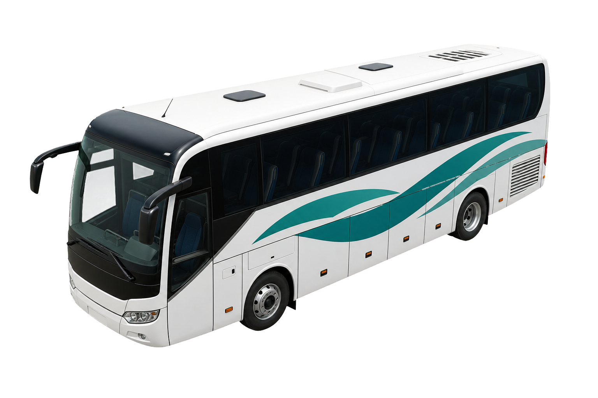

5010
A0
A0
Aumale vers Forges-les-Eaux
36,9 km - 9 arrets - OSRM actif
↱
Dans 200 m
Tournez a droite sur la D919
🔊
GPS car scolaire actif


1
3
6
9

↱
MoteurOSRM
Hors ligne0
Prochain arret
6 - Conteville - Les Defends
La voix Android annonce les prochaines consignes du trajet.
Mode car scolaire
Autocar scolaire standard : 13,0 m x 2,55 m.
Le circuit officiel reste prioritaire. Google Maps est seulement une option externe par coordonnees.
!
D316 hauteur 3,0 m
Restriction a verifier avant passage car.
!
D919 / Avenue des Sources 4,0 m
Controle panneau recommande selon hauteur reelle du vehicule.